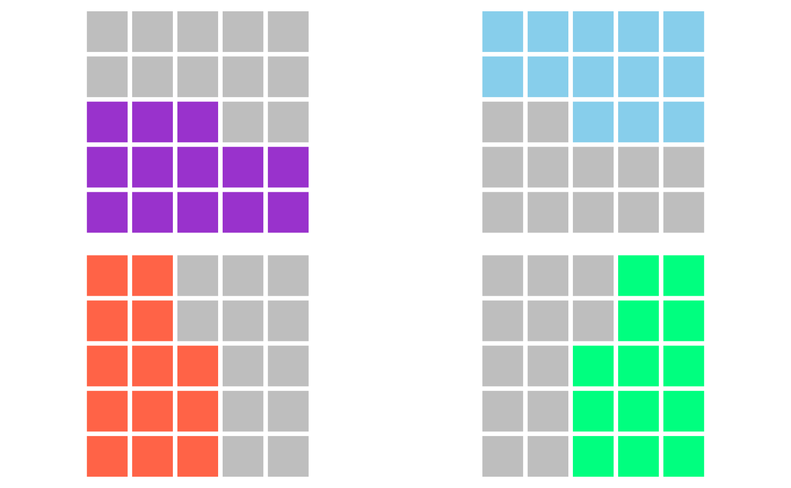
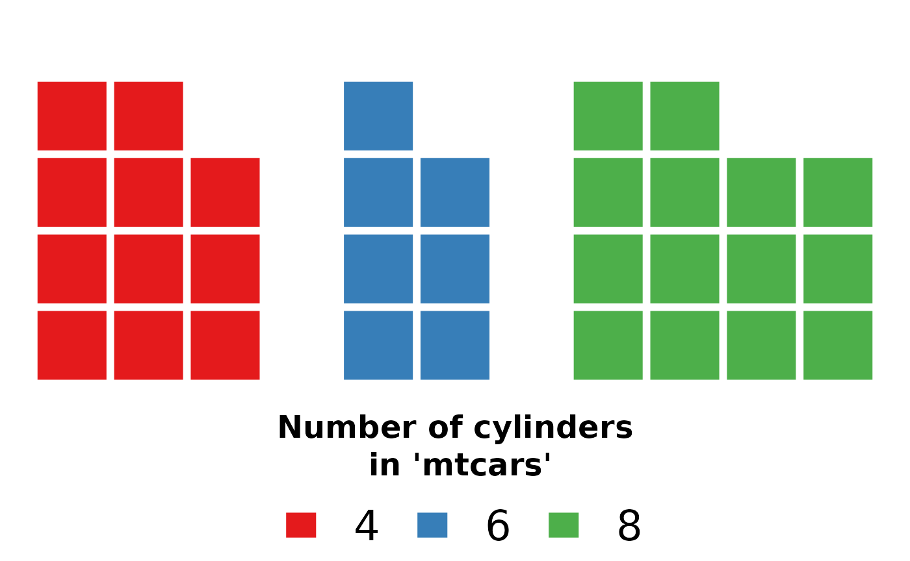

The package baffle stands for base waffle implements waffle charts in base R graphics. Waffles are square pie charts that visualize relative quantities using colored squares. Modern waffles charts are not limited to squares and use various dimensions and symbols.
Basic waffles
The baffle::waffle accepts a vector of abundancies x and constructs waffle chart accordingly. The vector of abundancies must be a numeric integer vector. For example, if we wish to visualize the difference between 3 apples and 8 oranges, all we need to type is:
By default, waffle tries to create a square matrices and uses the categorical Set 1 palette, if there are 9 or less objects, and the continuous Zissou palette otherwise. Colors and dimensions can be specified specifying the col, nrow and ncol arguments.
par(mfrow=c(1, 3))
waffle(c(25, 75), col=c("red", "gray"))
waffle(c(25, 75), col=c("blue", "gray"), ncol=5)
waffle(c(25, 75), col=c("darkgreen", "gray"), nrow=5)baffle fills the waffle by rows from the bottomleft corner. To change this, you can specify the byrow and from arguments:
par(mfrow=c(2,2))
waffle(c(13, 12), col=c("darkorchid", "gray"))
waffle(c(13, 12), col=c("skyblue", "gray"), from="topright")
waffle(c(13,12), col=c("tomato", "gray"), byrow=FALSE)
waffle(c(13,12), col=c("springgreen", "gray"), from="bottomright", byrow=FALSE)
Workhorse functions
Waffles in baffle are created by three basic functions:
waffle allows one to plot waffles directly, as demonstrated above. It constructs the waffle matrix using the design function and then plots the waffle matrix with the waffle.mat function. In most cases, waffle is all one needs.
design is a function responsible for transforming the vector of abundances into a waffle matrix. Waffle matrix is a matrix of integers, each integer corresponds to the item in the abundance vector, with empty cells having value NA. Design is used internally by the waffle function, or it can be used directly create a design matrix that can be then modified, such as to merge multiple design matrices.
waffle.mat is the function responsible for plotting the waffle matrix. The matrix is transformed into a grid and a square corresponding to each cell of the matrix is plotted at each point of the grid. waffle.mat expect a matrix in the format produced by design, but custom matrices can be provided as well.
Unstacked Waffles
Traditional waffles are squared pie charts are used to display proportion of some whole. Some modern examples use waffles as bar charts, there the waffles are “unstacked” and abundance of each element is displayed side by side.
par(mar=c(4,0,0,0))
cyl = table(mtcars$cyl)
waffle(cyl, stacked=FALSE, gap=1)
legend("top", horiz=TRUE, bty="n", inset=0.9, xpd=TRUE,
legend=names(cyl), cex=2,
fill=palette.colors(length(cyl), "Set 1"), border=NA,
title="Number of cylinders\n in 'mtcars'", title.font=2, title.cex=1.5)
Squares, Circles, Polygons
Waffle plots are typically represented by coloured squares. Many modern examples favour different shapes to make themselves more graphically distinct. The waffle function is flexible and accepts a plotting function. Any function will do as long as it accepts x and y coordinates and the diameter of plotted object is slightly smaller than one.
baffle comes with several of such functions, the default square, rectangle, circle, ellipse, regular convex polygon rcpoly. See ?Shapes for more information. These functions are similar to the graphics::symbols().
These functions are vectorised, in fact even the f argument in the waffle is vectorised, so multiple polygons can be plotted effortesly.
For example, we can represent the number of cylinders in the above example with regular n-sided polygons.
par(mar=c(4,0,0,0))
cyl = table(mtcars$cyl)
waffle(cyl, stacked=FALSE, gap=1, f=rcpoly, n=as.numeric(names(cyl)))
legend("top", horiz=TRUE, bty="n", inset=0.9, xpd=TRUE,
legend=names(cyl), cex=2,
fill=palette.colors(length(cyl), "Set 1"), border=NA,
title="Number of cylinders\n in 'mtcars'", title.font=2, title.cex=1.5)Shame that the legend does not allow for such flexibility!
Text and Points
As noted above, any function that prints to x and y coordinates can be used! The base functions points and text are already conforming and can be readily used.
Only setting their size can be a bit problematic. 1/strheight(s) and 1/strwidth(s) is the most answer, but these can be called only after the plotting window is defined. So one has to either check multiple values and select the most fitting one, which would be 4 in this example, or write a wrapper around text that calculates the label dimensions and selects the appropriate value. Since the plotting functions are called after the dimensions are set, one can now use strheight and strwidth to establish the text dimensions.
autotext = function(x, y, labels, d=0.9, ...){
cex = min(1/strheight(labels), 1/strwidth(labels))*d
text(x, y, labels, cex=cex, ...)
}
par(mar=c(4,0,0,0))
cyl = table(mtcars$cyl)
waffle(cyl, stacked=FALSE, gap=1, f=autotext, labels=names(cyl))
legend("top", horiz=TRUE, bty="n", inset=0.9, xpd=TRUE,
legend=names(cyl), cex=2,
fill=palette.colors(length(cyl), "Set 1"), border=NA,
title="Number of cylinders\n in 'mtcars'", title.font=2, title.cex=1.5)This demonstrates how easy is to improve or convert existing functions to be perfectly useable by baffle.
Bitmaps
To make things easier, baffle provides a wrapper around the base R’s rasterImage (in the graphics namespace) with the same interface as other shape functions.
To read raster images (such as png) use the lightweight png package. We then plot the original as well as a single colour representation of it using waffle and the rasters function.